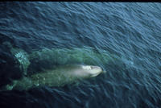
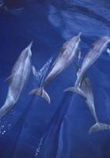

La Méditerranée est une zone particulièrement fréquentée par les cétacés : pas moins de 19 espèces y ont été recensées sur les 80 que compte la planète. La mer des Ligures (bassin Corso-liguro-provençal) apparaît comme un secteur de prédilection pour les cétacés. Sept espèces y sont couramment observées, particulièrement durant l'été (quatre espèces de dauphins, le globicéphale, le cachalot et le Rorqual). |
 |
Parmi elles, le Rorqual dit « commun » constitue sans doute le plus emblématique de tous les mammifères marins de la région.
D'une taille imposante, il n'est pas rare de croiser ce proche cousin de la baleine bleue entre la Corse et le continent.
Pourtant, si les scientifiques l'ont étudié dans les autres mers du globe, ils ne savent que très peu de choses sur le Rorqual commun en Méditerranée : les animaux sont-ils fidèles à cette zone géographique ? Combien sont-ils ? Quel ratio mâles et femelles ? Quel est le taux de natalité ? Sont-ils victimes des pollutions marines que subit la Méditerranée ?
Conscients de l'importance de la Méditerranée, notamment pour les mammifères marins, la France, la Principauté de Monaco et l'Italie signent en 2000 un accord pour la création en Méditerranée d'un Sanctuaire pour les Mammifères Marins : le Sanctuaire PELAGOS.
Ce Sanctuaire facilite la concertation entre tous les acteurs. Le WWF-France y contribue dès l'origine au travers de ses programmes d'études et par sa participation aux groupes de travail thématiques qui définissent les orientations de sa gestion.
Il participe en particulier au groupe "recherche" qui est consulté pour tout projet en mer (comme les courses off-shore généralement refusées) et qui établit un plan de gestion définissant les priorités et les actions à mener.
Dans le cadre du sanctuaire Pelagos sont également menées des actions de sensibilisation et de formation auprès de l'administration en mer (Douanes, Armée…), des commandants de bord des compagnies maritimes et des compagnies de Whale watching. En savoir plus
La création de zone Natura 2000 représente aussi une solution. Ce fût le cas en Corse, dans le secteur des Agriate, où une nouvelle zone a pu être proposée sur la base de nos travaux de recensement des Grands dauphins effectué dans le cadre du programme Cap Ligures.
Mais pour mieux identifier les menaces qui pèsent sur les populations de cétacés et proposer des mesures de gestion et de protection adaptées, il faut avant tout mieux les connaître.
C'est pourquoi, la mise en place de programmes de recherche et de suivi à long terme demeure indispensable.
|  | Le programme Cap Ligures a été lancé en 2000 pour appuyer la création du sanctuaire Pelagos pour la protection des mammifères marins de Méditerranée. De nombreux programmes ("Objectif Cétacés" avec la Fondation Nicolas Hulot à bord de leur bateau Fleur de Lampaul, puis "Cap Cétacés" avec l'Institut Océanographique Paul Ricard) se sont succédés depuis dans la continuité. Depuis 2008 nous travaillons à bord de notre bateau ambassadeur le WWF columbus. Nous avons commencé par étudier la distribution des cétacés au sein du sanctuaire pour identifier les zones préférentielles de chaque espèce et estimer la taille de leurs populations (Grand dauphin en 2000 : 400 – 500 en Corse et Golfe du Lion ; Rorquals en 2001 : 650 sur la zone de Pelagos ; Dauphins bleus et blancs : 35000) Sur la base de ces résultats, nous avons lancé le programme Life LINDA qui a permis de faire la lumière sur l'impact du "chapardage" des dauphins dans les filets des pêcheurs et de préconiser des solutions pour les limiter, au bénéfice des dauphins ET des pêcheurs. |
Nous avons ensuite décidé de nous concentrer sur le plus grand de ces cétacés : le rorqual commun (20 mètres et 70 tonnes, en moyenne), second plus grand animal de la planète et espèce emblématique du sanctuaire.
Nous pratiquons des photos-identification (ID) pour reconnaître chaque individu et mieux comprendre le comportement de l'espèce (déplacements, zones de fréquentation, alimentation, etc.). C'est un travail à long terme mais nous avons déjà retrouvé des animaux à plusieurs reprises. Une cinquantaine d'animaux sont "catalogués".
Nous prélevons également des biopsies pour étudier la génétique de l'espèce et son niveau de contamination par les polluants.
La génétique nous permet ou nous permettra :
Concernant la pollution :
Nous avons sélectionné 3 familles de polluants représentatives dont nous mesurons les taux dans le gras des baleines : les PCBs, Organocholorés, DDT et dérivés, les retardateurs de flamme brômés (PBDE, les successeurs et remplaçants des PCBs) et les alkylphénols (issus des détergents en particulier).
L'objectif est de collecter 50 à 60 biopsies, afin d'établir un niveau de référence statistiquement représentatif pour les taux de contamination de ces 3 familles. Ces analyses pourront être refaites dans une dizaine d'année pour évaluer leur progression et constitueront une indication précieuse pour les gestionnaires du sanctuaire Pelagos.
Nous avons retrouvé tous ces polluants dans nos baleines de Méditerranée mais à des niveaux de concentration variables :
Au cours de ces campagnes en mer, Le WWF recueille également des données sur les autres espèces de cétacés, sur les oiseaux et les tortues, sur les activités humaines au large (trafic maritime), sur les méduses et sur les déchets.
Depuis 2007, Le WWF est membre du Groupement d'Intérêt Scientifique pour les Mammifères Marins de Méditerranée (GIS3M) qui regroupe la plupart des équipes de recherche sur les cétacés de Méditerranée.
Photo-identification et biopsie : mode d'emploi
La photo-identification permet de reconnaître les individus à partir de la forme de leur aileron dorsal et des marques naturelles (pigmentation et cicatrices).
Chez le Rorqual commun, l'identification se fait à partir de photographies prises du coté droit : les animaux n'ayant pas la même pigmentation des deux côtés et celle de droite étant la plus caractéristique.
Une biopsie est un petit cylindre de peau et de gras prélevé sur les animaux à l'aide dune arbalète munie d'une pointe spéciale.
L'étude génétique de ce prélèvement permet d'identifier le sexe de l'animal. Le gras concentre plus particulièrement les polluants chimiques.
Ce film vous permet de voir comment les scientifiques réalisent la photo identification et la biopsie sur un Rorqual commun.
Transect
L'étude de la distribution est réalisée en se basant sur la méthode du "transect linéaire". Cette méthode consiste à détecter les cétacés le long d’un trajet.
Ce trajet est fait à vitesse constante dans des conditions météorologiques favorables à l'observation et avec en permanence 3 observateurs.
A chaque observation de cétacé, les informations recueillies sont multiples : espèce, nombre d'individus, position, heure, distance et angle de l'animal par rapport au bateau, stade de maturité, comportement (réaction face au bateau, sauts, types de nage, souffles (nombre, intervalle ...), temps de plongée et d'immersion, direction suivie, autres comportements particuliers) ainsi que les espèces associées.
Ce film vous permet de voir les conditions de travail des scientifiques en « transect » de ligne.